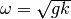

OSIRIS LIBRARY documentation (osiris)¶
Submodules¶
Closure Module (osiris.closure)¶
This module includes routines to model what happens at sub-grid scales.
Constants¶
-
osiris.closure.coherence_times.grid_coherence(U, res, f0, model='Pierson-Moskowitz')[source]¶ Calculates the coherence time of a resolution cell
Parameters: - U – wind velocity at reference height
- res – grid size [m]
- f0 – carrier frequency [Hz]
- model – Model used, defaults to Pierson-Moskowitz (currently the only one implemented)
Constants Package (osiris.constants)¶
Constants¶
Custom Added Constants
r_earth: Earth radius [m] m_earth: Earth mass [Kg] c: speed of light [m/s] g_star: gravitational constant g_star [m^3/km/s^2] gm_earth: g_star * mass of earth [m^3/s^2] gm_sun: g_star * mass of sun [m^3/s^2] au: astronomical unit [m] r_sun: radius of the sun [m] p_sun: radiation pressure of the sun [N/m^2] gm_moon: g_star * mass of moon [m^3/s^2] d_moon_earth: mean distance moon to earth [m] r_moon: radius of moon [m] h: Planck’s constant [Js] omega_earth: angular velocity of earth [1/s] WGS84 pi: pi to 30 digits j2: zonal coefficient j3: zonal coefficient j4: zonal coefficient j5: zonal coefficient
I/O Utilities (osiris.io)¶
This module contains I/O Utilities
State Files¶
-
class
osiris.io.netcdf.NETCDFHandler[source]¶ Child class to ease netCDF file handling.
- Usage:
Class variable __file__ contains the netCDF file object
__file__ needs to be properly initialized by parent class
- Complex types are supported in the following way:
- Define the variable real and imaginary parts with suffixes _r, _i respectively, i.e. test_r, test_i
- Use get/set methods appending ‘*’ to variable name, i.e. get(‘test*’), set(‘test*’, complex_array)
NRCS Models Module (osiris.nrcs)¶
This module includes a number of backscattering models.
RCS Models
Available models¶
-
class
osiris.nrcs.ka.RCSKA(mode, k0, x, y, dx, dy)[source]¶ Kirchoff Approximation
Available solution modes: SPA / FA
SPA: Stationary-Phase Method
- FA: Facet Approach E.M. calculation model
This models calculates the E.M. of a surface solving the Stratton-Chu integral on each facet. This way, an explicit solution for the integral can be implemented and hence leading to reasonable computation times.
- References:
- “Simulation of L-Band Bistatic Returns From the Ocean Surface:
A Facet Approach With Application to Ocean GNSS Reflectometry” M. Paola Clarizia et al.
“Microwave Remote Sensing. Active and Passive (Vol II)” Sect. 12-4 T. Ulaby, R. Moore, A. Fung
Parameters: - mode – Computation mode (spa, fa)
- k0 – Radar wave number
- x – Surface ‘X’ vector
- y – Surface ‘Y’ vector
- dx – Surface ‘X’ facet resolution
- dy – Surface ‘Y’ facet resolution
-
field(R_i, R_s, pol_i, pol_s, theta_i, theta_s, phi_i, phi_s, Dz, Diffx, Diffy, Diffxx, Diffyy, Diffxy)[source]¶ Calculates E.M. field
Parameters: - R_i – Distance from transmitter to scene center
- R_s – Distance from scene center to receiver
- pol_i – Incident polarization (v, h)
- pol_s – Scattered polarization (v, h)
- theta_i – Incidence elevation angle
- theta_s – Scattered elevation angle
- phi_i – Incidence azimuth angle
- phi_s – Scattered azimuth angle
- Dz – Surface height field
- Diffx – Space first derivatives (X slopes)
- Diffy – Space first derivatives (Y slopes)
- Diffxx – Space second derivatives (XX)
- Diffyy – Space second derivatives (YY)
- Diffxy – Space second derivatives (XY)
-
rcs(pol_i, pol_s, theta_i, theta_s, phi_i, phi_s, Dz, Diffx, Diffy, Diffxx, Diffyy, Diffxy)[source]¶ Calculates RCS
Parameters: - pol_i – Incident polarization (v, h)
- pol_s – Scattered polarization (v, h)
- theta_i – Incidence elevation angle
- theta_s – Scattered elevation angle
- phi_i – Incidence azimuth angle
- phi_s – Scattered azimuth angle
- Dz – Surface height field
- Diffx – Space first derivatives (X slopes)
- Diffy – Space first derivatives (Y slopes)
- Diffxx – Space second derivatives (XX)
- Diffyy – Space second derivatives (YY)
- Diffxy – Space second derivatives (XY)
-
class
osiris.nrcs.kodis.RCSKodis(inc, k0, dx, dy)[source]¶ Specular model (R.D. Kodis ‘66)
Physical optics model as described in R.D. Kodis (1966) paper ‘A Note on the Theory of Scattering from an Irregular Surface’. E.M. solved using Stationary Phase Method.
Note
G. Valenzuela suggested that reflection coefficient (R) may be replaced by effective refl. coef.!
Note
OASIS uses only range dependent incidence angle, so it is given on class init.
Parameters: - inc – Incidence angle matrix
- k0 – Radar wave number
- dx – Range resolution
- dy – Azimuth resolution
-
class
osiris.nrcs.romeiser97.RCSRomeiser97(k0, inc_angle, pol, dx, dy, wind_U, wind_dir, wind_fetch, sw_spec_func, sw_spread_func, d)[source]¶ Bragg scattering model (R. Romeiser ‘97)
This function returns RCS using the model described in the paper titled: “An improved composite surface model for the radar backscattering cross section of the ocean surface”, R. Romeiser and W. Alpers (1997)
Parameters: - k0 – Radar wave number
- inc_angle – Nominal incidence angle
- pol – Polarization (‘vv’, ‘hh’)
- dx – Surface facets X size
- dy – Surface facets Y size
- wind_U – Wind speed (U_10)
- wind_dir – Wind blowing direction (rad)
- wind_fetch – Wind fetch
- sw_spec_func – Omnidirectional spectrum function
- sw_spread_func – Spreading function
- d – Filter threshold (Kd = Kb/d)
Spectrum Models (osiris.spec)¶
This module contains omni-directional wavespectrum models
Note
All ocean spectrum functions must be defined with the following parameters:
model_name(k, U_10, fetch)
Ocean spectrum models¶
Elfouhaily et al. Omnidirectional Spectrum
- Reference:
- Elfouhaily T., Chapron B., and Katsaros K. (1997). “A unified directional spectrum for long and short wind driven waves”
Wave number spectrum based on the frequency spectrum presented in Hasselmann et al. (1976). The dispersion relation used in the transformation is , so it is only valid for low wave numbers and deep water.
- Reference:
Hasselmann, K., W. Sell, D. B. Ross, P. Mueller, 1976: “A Parametric Wave Prediction Model”. J. Phys. Oceanogr., 6, 200-228.
Hasselmann, D. E., M. Dunckel, J. A. Ewing, 1980: “Directional Wave Spectra Observed during JONSWAP 1973”. J. Phys. Oceanogr., 10, 1264-1280
Implementation of Neumann wave-spectrum according to equation 8.14:15 in Kinsman’s “Wind Waves”.
TODO: Change to ‘k’ domain
Omnidirectional spectrum of Romeiser 97 model
- Reference:
- “An improved composite surface model for the radar backscattering cross section of the ocean surface”, R. Romeiser and W. Alpers (1997)
Directional Spreading Functions (osiris.spread)¶
Directional Spreading Functions
All functions must be defined with the following parameters:
model_name(k, theta, U_10, fetch)
Available models¶
Implementation of the directional function to construct the Banner directional function, following McDaniel’s paper.
McDaniel, S. T. (2001): Small-slope predictions of microwave backscatter from the sea surface, Waves in Random Media, 11:3, 343-360.
Banner, M. L., (1990). Equilibrium spectra of wind waves. J. Phys. Oceanogr., 20, 966-84.
Cosine raised to the 2s power directional wave function. The model is based on that presented in in Hasselmann et al. (1980), but has been translated to the wave number domain. The function is normalized so that the integral from -pi to pi is 1. The function depends on the model used for the omnidirectional spectrum to calculate wave number at the peak of the spectrum. Here, we use the Hasselmann (1976) spectrum (JONSWAP spectrum).
Implementation of the directional function to construct a directional wave spectrum, following Elfouhaily et al.
Elfouhaily T., Chapron B., and Katsaros K. (1997). “A unified directional spectrum for long and short wind driven waves” J. Geophys. Res. 102 15.781-96
LOG: 2011-08-26 Gordon Farquharson: Removed an extra factor of 2. the code that implements from Equation 49. 2013-01-25 Paco Lopez Dekker: Renormalized function so that the integral in theta gives 1 (instead of 0.5)
Speading function based on Longuet-Higggins (1963) and Hasselmann (1980)
Implementation of the directional function to construct a directional wave spectrum, following McDaniel’s paper. This is an extension of the direction model of Donelan et al.
McDaniel, S. T. (2001): “Small-slope predictions of microwave backscatter from the sea surface”, Waves in Random Media, 11:3, 343-360.
Spreading function of Romeiser 97 model
- Reference:
- “An improved composite surface model for the radar backscattering cross section of the ocean surface”, R. Romeiser and W. Alpers (1997)
Implementation of SWOP spreading function
Nagai, K. “Computation of Refraction and Diffraction of Irregular Sea”. Report of the Port and Harbour Research Institute, Vol. 11, No. 2, June 1972. (in Japanese)
Warning
Wind speed is defined above 5m of the surface
Ocean surfaces (osiris.surfaces)¶
This module contains ocean surface class and related utilities
Ocean surfaces¶
-
class
osiris.surfaces.ocean.OceanSurface[source]¶ Ocean Surface class
This class is used to simulate ocean surfaces. Given an initial description of the surface, or an state file (initialized surface file) it can compute many surface properties (height field, slopes, velocities...) for any time instant.
-
init(Lx, Ly, dx, dy, cutoff_wl, spec_model, spread_model, wind_dir, wind_fetch, wind_U, current_mag, current_dir, swell_enable=False, swell_ampl=0.0, swell_dir=0.0, swell_wl=0.0, compute=[], opt_res=True, fft_max_prime=2, choppy_enable=False)[source]¶ Initialize surface with parameters
Parameters: - Lx – Scene X size (m)
- Ly – Scene Y size (m)
- dx – Scene X resolution (m)
- dy – Scene Y resolution (m)
- cutoff_wl – Spectrum wavelength cut-off (m) - None/’auto’ to set it automatically
- spec_model – Omnidirectional Spectrum model
- spread_model – Spreading function model
- wind_dir – Wind direction (rad)
- wind_fetch – Wind fetch (m)
- wind_U – Wind speed (m/s)
- current_mag – Current magnitude
- current_dir – Current direction (rad)
- swell_enable – EN/DIS Swell
- swell_ampl – Swell amplitude (m)
- swell_dir – Swell direction (rad)
- swell_wl – Swell peak wavelength (m)
- compute – List with values to compute - ‘D’: EN/DIS Computation of Wavefield (Dx,Dy,Dz) - ‘Diff’: EN/DIS Computation of space 1st derivatives (slopes) - ‘Diff2’: EN/DIS Computation of space 2nd derivatives - ‘V’: EN/DIS Computation of time 1st derivative (velocities) - ‘A’: EN/DIS Computation of time 2nd derivative (accelerations) - ‘hMTF’: EN/DIS Computation of Hydrodynamic MTF
- opt_res – Automatically adjust resolution to have optimal matrix sizes
- fft_max_prime – Maximum prime factor allowed in matrix sizes
- choppy_enable – EN/DIS Choppy waves
-
load(state_file, compute=[])[source]¶ Initialize surface from OTGI File
Parameters: - state_file – OTGI file path
- compute – List with values to compute - ‘D’: EN/DIS Computation of Wavefield (Dx,Dy,Dz) - ‘Diff’: EN/DIS Computation of space 1st derivatives (slopes) - ‘Diff2’: EN/DIS Computation of space 2nd derivatives - ‘V’: EN/DIS Computation of time 1st derivative (velocities) - ‘A’: EN/DIS Computation of time 2nd derivative (accelerations) - ‘hMTF’: EN/DIS Computation of Hydrodynamic MTF
-
save(state_file)[source]¶ Save surface initialization parameters. This lets to simulate later exactly the same surface if needed
Parameters: state_file – State file path
-
t¶ Surface time property (t) When time (t) is updated, surface is propagated and all parameters are computed again.
-
-
class
osiris.surfaces.balancer.OceanSurfaceBalancer(surface, dt, t0=0.0, root=0)[source]¶ Ocean Surface Balancer class
This class is used to access a surface from different MPI processes so that each one is assigned an azimuth (y) portion of the surface and also gives access to common properties
Parameters: - surface – Full ocean surface (only owned by root process)
- dt – Interpolation differential
- t0 – Initialization time
- root – Rank number of surface owner
Utility module (osiris.utils)¶
This module contains ocean surface class and related utilities
Ocean surfaces¶
-
osiris.utils.misc.balance_elements(N, size)[source]¶ Divide N elements in size chunks Useful to balance arrays of size N not multiple of the number of processes
Parameters: - N – Number of elements
- size – Number of divisions
Returns: (counts, displ) vectors